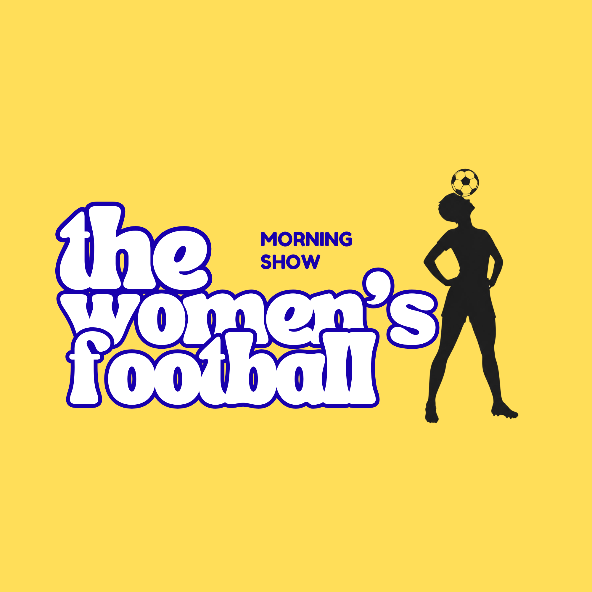

KENAME MEDIA
THE WOMEN'S FOOTBALL
MORNING SHOW
Start your day with HER Game.

READ SINCE 1895
MIXED ZONES, PRESSERS
& REPORTS
Interviews, press conferences and reporting from the women's game.
ADD VIDEO 01
ADD VIDEO 02
ADD VIDEO 03